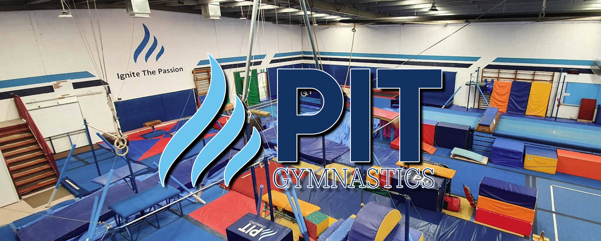
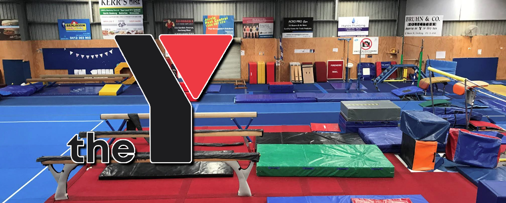
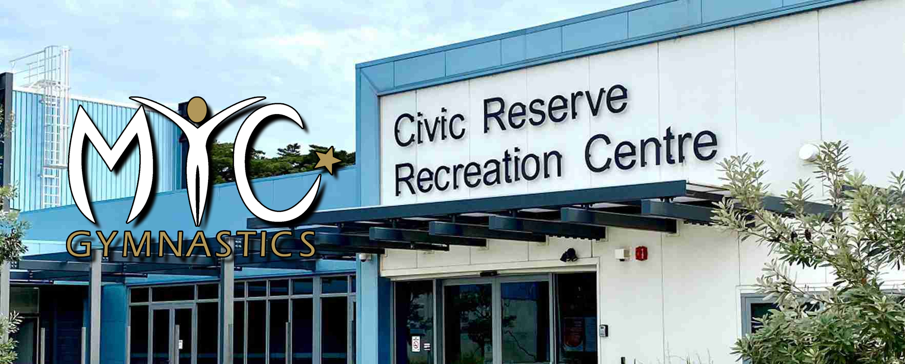
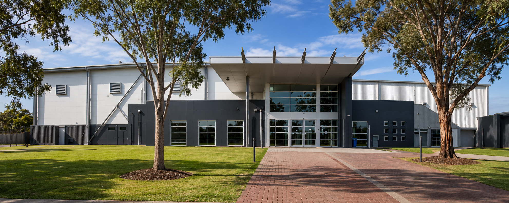
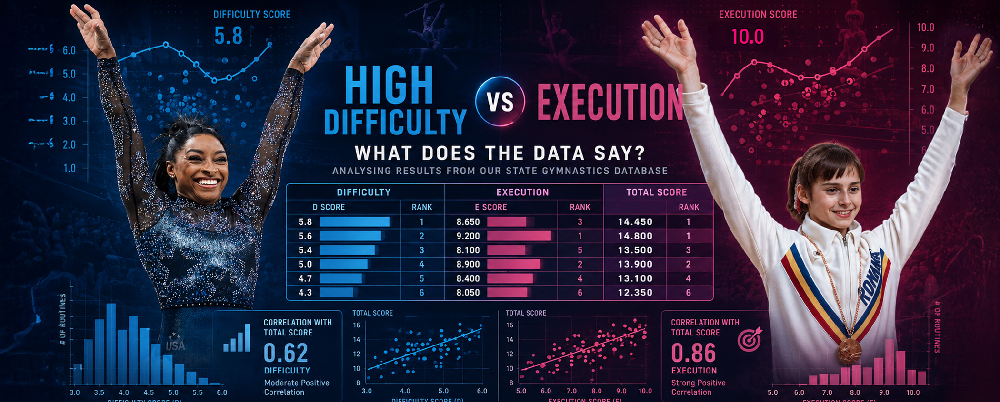
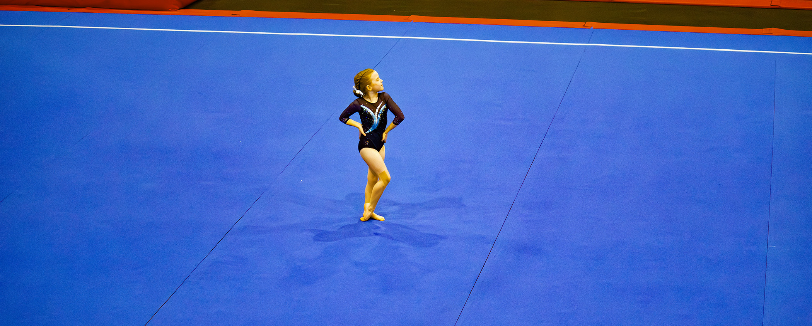
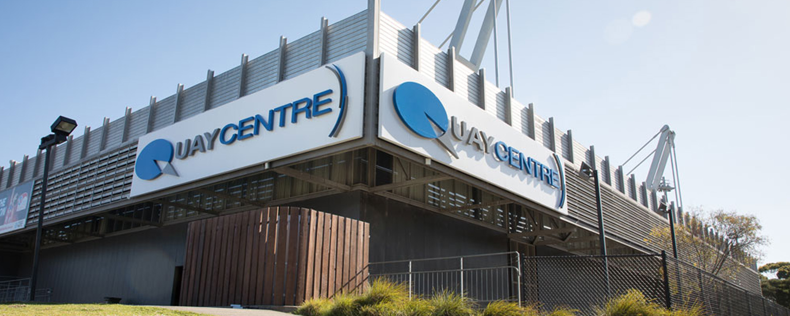
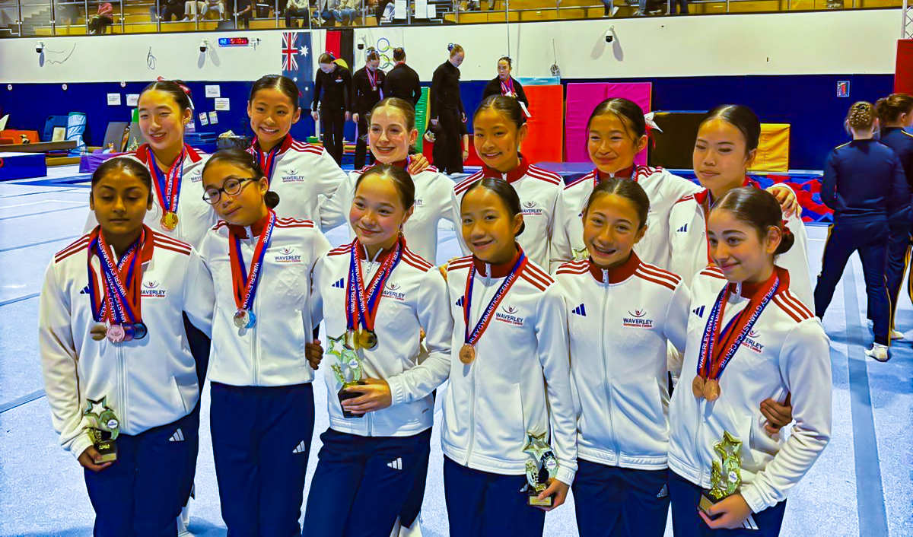
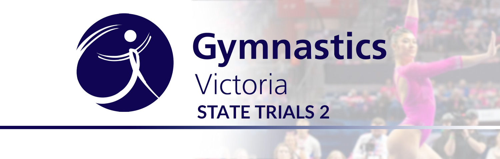

News & Articles
Season previews, results round-ups, and community updates.

Inside PIT: The Club the University Built
From a Preston Institute of Technology corridor in Bundoora to 35 MAG athletes, 29 medals at Level 8 and above, and an annual invitational
25 June 2026
PIT Gymnastics in Mill Park takes its name from the Preston Institute of Technology, the Bundoora campus where the club was founded in 1979, an institution that has since become RMIT. Forty-seven years later, the club runs approximately 750 gymnasts across programs from recreational to elite, and the data reflects something unusual for Victorian gymnastics: more MAG athletes than WAG. In our database, PIT has 35 MAG athletes and 23 WAG athletes. The MAG programme has accumulated 29 all-around medals at Level 8 and above, including Conor McGillivray winning the Junior International all-around at the 2025 Senior Victorian Championships with 75.85. At the 2026 Senior Vics, Adam Bowman won the Level 8 Open all-around with 66.6, Jamil Awad placed third and won three apparatus events, and Liam Duncan placed second at Level 6. The club also hosts its own annual MAG invitational, drawing competitors from across the Victorian circuit.
Read more →

Inside The Y: The Club Across the Bay
From a woollen mill on Pakington Street to 91 WAG athletes and 11 international-level gymnasts
21 June 2026
Y Geelong Gymnastics has been competing at the Victorian Championships since 1988, and the data reflects what three decades of steady building produces: 91 WAG athletes, 51 all-around medals at Level 8 and above, and 11 athletes who have competed at international levels in our database. At the 2026 Senior Victorian Championships, the club won team gold at both Level 8 and Level 10, with Ivy Alford sweeping the Level 8 individual titles and the international stream producing four medallists on the same day. Their MAG programme, smaller at 18 athletes, contributed a Level 5 Floor title from Hamish Goodin. In the weeks before the championships, the club lost Terry Cliff, the YMCA Executive Director who established the gymnastics programme in the late 1970s and ran the organisation until 2000.
Read more →

Inside MYC: The Club at the End of the Peninsula
What 70 years of gymnastics on the Mornington Peninsula looks like in the data
16 June 2026
MYC Gymnastics has been running gymnastics on the Mornington Peninsula since 1954. Their MAG programme leads Victoria in L8+ all-around medals, their Level 7 WAG coaching team won Gymnastics Victoria's Coaching Team of the Year, and four athletes qualified for the Level 10 National Squad.
Read more →

Inside BTYC: Victoria's MAG and WAG Double Act
The numbers behind one of Victoria's few clubs running competitive programmes at the elite end of both WAG and MAG
13 June 2026
BTYC Gymnastics has been running gymnastics in Melbourne's east for over 60 years, competing seriously at the top end of both WAG and MAG. Their men's programme has accumulated 71 AA medals at Level 8 and above, with nine athletes on the 2026 MAG State Team and head coach Lachlan Graham leading the state coaching staff.
Read more →

Inside Waverley: Victoria's Gymnastics Powerhouse
What the data says about Victoria's most decorated WAG club, and a closer look at how its roster was actually built
10 June 2026
Waverley Gymnastics Centre is Victoria's dominant elite WAG club. With an Olympian, the reigning Australian All-Around champion, 20 athletes at international level, and 27 state team selections in 2025 alone, the numbers tell a story that's hard to argue with.
Read more →

Does Difficulty Actually Win? A Gym Dad Digs Into the Data
What 3,400 competition results say about the D vs E trade-off in Victorian WAG
6 June 2026
A data analysis of over 3,400 Level 7+ Victorian WAG results finds that difficulty is a stronger predictor of competitive success than execution on most apparatus, but beam is the exception, elite clubs show no trade-off between the two, and a handful of athletes prove you can win on pure execution alone if it's exceptional enough.
Read more →

Why I Don't Expect My Gymnastics Daughter to Love PE
A gymnastics dad wonders whether school sport is really for everyone
2 June 2026
A gymnastics dad whose daughter trains 19 hours a week reflects on why he doesn't mind if she isn't enthusiastic about school sport, and questions whether the assumptions behind mandatory PE fit every student equally.
Read more →

Inside the Numbers: the stats behind Victoria's 2026 team selections
A gymnastics parent's look at how trials, apparatus strengths, and championship form shaped who got the call-up
1 June 2026
Using trial and championship data, we break down how Victoria's 2026 WAG State Team and Border Challenge Team were selected, with three clubs (MAGA, Waverley, and YMCA Geelong) each landed seven athletes across the two squads.
Read more →

A weekend to remember: highlights of the 2026 Senior Victorian Championships
Maddie Smith claims Level 10 by 0.033, Estelle Warnes stays unbeaten, Cerano Tosone sweeps five apparatus events
28 May 2026
Maddie Smith (Cheltenham Youth Club) claimed Level 10 by just 0.033 points over Annabella Geraghty, Estelle Warnes (Chamford) capped an unbeaten 2026 campaign at Level 9, and Cerano Tosone swept five of six Level 7 apparatus events, a weekend to remember across WAG, MAG, and Acrobatic Gymnastics.
Read more →

Waverley Invite 2026: Eclipse Gymnastics claims Level 10 double as Wawolangi shines on home floor
Tight team margins, year-on-year leaps, and skill debuts across two days at Waverley Gymnastics Centre
20 May 2026
The 2026 Waverley Judges Invite delivered on May 10–11, with Eclipse Gymnastics Ringwood's Indianna Gilson and Isobel Myles claiming both Level 10 titles, Estelle Warnes winning Level 9 after a remarkable year-on-year jump, and both team competitions settled by under a point.
Read more →

No, Maria Paseka didn't quit at the Olympics
A viral clip from 2012 is missing some very important context
16 May 2026
A widely-shared YouTube Shorts clip claims Maria Paseka 'quit' at the 2012 Olympics, but what you're actually seeing is a deliberate team strategy called a 'scratch', and it was entirely intentional.
Read more →

Nadiu edges Cross by 0.034 at WAG Trial 2
Sophie Strano leads a tight Level 8 Division 1 field at CYC, while Emma Hale posts the bars score of the competition
3 May 2026
Arianna Nadiu (MAG Academy) won Level 7 by just 0.034 points at WAG Trial 2 and Border Challenge Trial 2, while Sophie Strano (Jets) led L8 Division 1 with 47.332 and Emma Hale posted a 13.033 on bars.
Read more →

Oceania Selections
Australia Names Strong Squads for Home Oceania Championships and International Tour
27 January 2026
Australia has announced full men's and women's squads (senior & junior) for the Oceania Championships in Brisbane, plus selected athletes and coaches for upcoming events in Slovenia and China.
Read more →

Three new Uneven Bars skills
Three gymnasts debut original Uneven Bars elements in Osijek, each earning official recognition in the Code of Points
27 January 2026
At the Osijek World Cup, Hamelin (FRA), Mesiri (GRE), and Rodrigues Barbosa (BRA) each successfully performed new Uneven Bars skills, meeting the criteria to have them officially named and added to the Code of Points.
Read more →